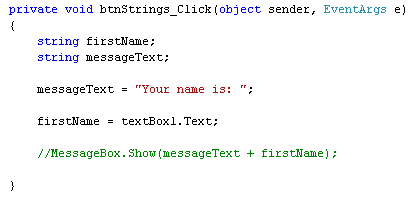
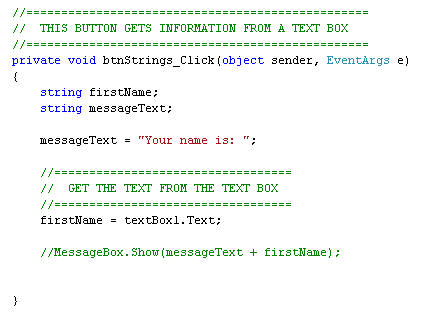
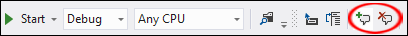
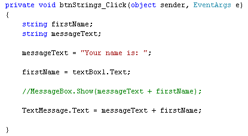
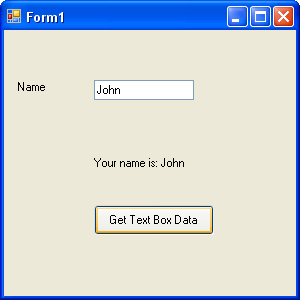
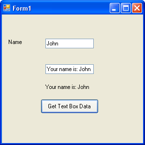

Comments in C# .NET
<< Continues from previous lesson
You don't have to use a message box to display the result. You can use other controls, like a Label. Let's try it.
Add a new Label to your form. Use the Properties Window to set the following properties for your new Label:
Name: TextMessage
Location: 87, 126
Text: Message Area
Return to your coding window, and add two forward slashes to the start of your MessageBox.Show( ) line. The line should turn green, as in the following image:

The reason it turns green is that two forward slashes are the characters you use to add a comment. C# then ignores theses lines when running the programme. Comments are a very useful way to remind yourself what the programme does, or what a particular part of your code is for. Here's our coding window with some comments added:

You can also use the menu bar, or the toolbar, to add comments. Highlight any line of text in your code. From the menu bar at the top of Visual C#, select Edit > Advanced > Comment Selection. Two forward slashes will be added to the start of the line. You can quickly add or remove comments by using the toolbar. Locate the following icons on the toolbars at the top of Visual C#:
In version 2012, the comment icons look like this:

The comment icons are circled in red, in the images above. The first one adds a comment, and the second one removes a comment. (If you can't see the above icons anywhere on your toolbars, click View > Toolbars > Text Editor.)
Now that you have commented out the MessageBox line, it won't get executed when your code runs. Instead, add the following like to the end of your code:
TextMessage.Text = messageText + firstName;
Your coding window should then look like this:

Run your programme again. Type your name in the text box, and then click your button. The message should now appear on your label, instead of in a Message Box:

The reason is does so is because you're now setting the Text property of the Label with code. Previously, you changed the Label's Text Property from the Properties Window. The name of our label is TextMessage. To the right of the equals sign, we have the same code that was in between the round brackets of the Show( ) method of the MessageBox.
OK, time for an exercise.
Exercise
Add a second text box to your form. Display your message in the text box as
well as on the label. So if your name is John, your second text box should have:
"Your name is: John" in it after the button is clicked.
When you complete this exercise, your form should look like this, when the button is clicked:

We’re now going to move away from string variables and on to number variables. The same principles you’ve just learnt still apply, though:
- Set up a variable, and give it a name
- Store something in the variable
- Use code to manipulate what you have stored